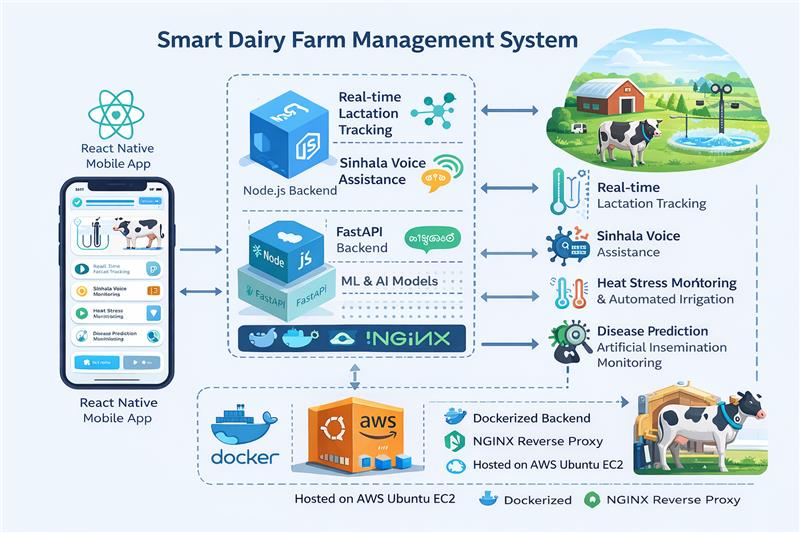
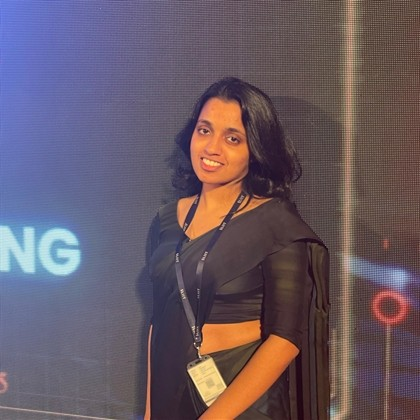

Project Proposal
Initial proposal submitted and approved.
Transforming Dairy Farming with AI, IoT & Real-Time Intelligence
An intelligent dairy management system designed for Sri Lanka, combining machine learning, IoT sensors, multimodal disease detection, and a Sinhala voice assistant to improve milk production, animal health, and farm efficiency.
TCN model predicts cattle stress in advance
Multimodal AI using image + text + reports
Farmer-friendly chatbot with voice support
Actionable insights for farm optimization
Detailed research background and methodology of the Smart Dairy AI System
Recent advancements in dairy farming highlight the use of IoT, machine learning, and precision livestock farming techniques to improve productivity. Studies show that automated cooling systems and sensor-based monitoring can significantly increase milk yield by reducing heat stress in cattle. Deep learning models such as CNNs (e.g., VGG16, ResNet) have demonstrated strong performance in detecting livestock diseases using image data. Additionally, multimodal approaches combining image, text, and clinical data have proven more accurate than single-data-source systems. In Sri Lanka, research also emphasizes the importance of localized solutions such as Sinhala-based voice assistants to improve accessibility for farmers with limited digital literacy. However, most existing systems lack real-time predictive analytics and integrated intelligent decision support.
Despite global advancements, Sri Lankan dairy farms still rely heavily on manual monitoring and traditional practices. Existing systems are often fragmented, lacking integration between health monitoring, productivity tracking, and advisory services. Most available solutions do not provide: - Real-time monitoring of cattle health and milk production - Early detection of diseases using AI - Predictive analytics for lactation performance - Localized, language-friendly advisory systems This creates a critical gap in intelligent, accessible, and data-driven dairy farm management systems tailored to local conditions.
How can an integrated smart dairy farming system be designed to continuously monitor cattle health, predict milk production patterns, detect diseases early, and provide real-time, farmer-friendly recommendations in the Sri Lankan context? The challenge lies in combining IoT, machine learning, and localized AI technologies into a single, scalable, and user-friendly platform.
The proposed system integrates four intelligent modules into a unified smart dairy platform: 1. IoT-Based Heat Stress Monitoring: Wearable sensors collect temperature and humidity data, which is processed using a Temporal Convolutional Network (TCN) model to predict heat stress levels. An automated sprinkler system is activated when stress thresholds are exceeded. 2. Lactation Monitoring and Prediction: Milk production data is analyzed using a Random Forest regression model to generate lactation curves and detect deviations between predicted and actual yield. 3. Multimodal Disease Detection: A hybrid AI model combines: - Image classification (VGG16 CNN) - Symptom-based analysis - OCR-based clinical report analysis to improve diagnostic accuracy. 4. Sinhala Voice-Assisted Chatbot: A Retrieval-Augmented Generation (RAG) system enables farmers to interact using Sinhala voice queries, providing real-time advice on feeding, health, and farm management. This integrated approach enables continuous monitoring, predictive insights, and automated decision support.

Initial proposal submitted and approved.
First evaluation of system design and implementation.
Paper submission with literature and findings.
Advanced system implementation and evaluation.
Project website and UI evaluation.
Final thesis submission and completion.

Sri Lanka Institute of Information Technology
CIC Seeds Farm, Higurakgoda
Hope this project helped you in some manner. Thank you!
- SmartDairy Team